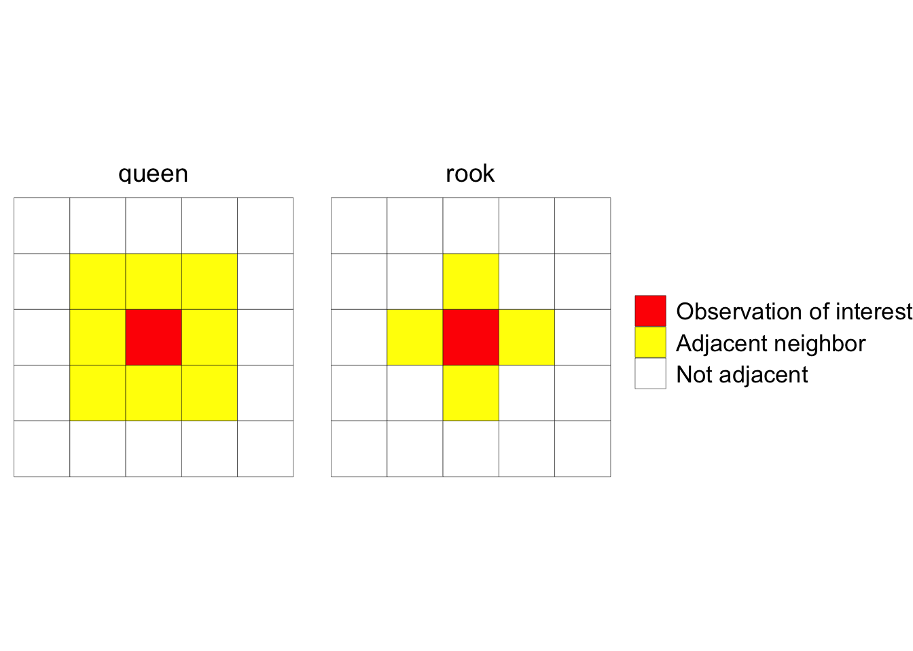

Section 2 Introduction
2.1 Why care about spatial variation?
Goal in this case is to understand and account for spatial variation. These are lattice data
2.2 Diagnosing spatial autocorrelation
Spatial correlation is similarity of plots that are close to one another. Larger spatial gradients need to modelled indpendently - perhaps through blocking.
2.2.1 Moran’s I
Moran’s I, sometimes called “Global Moran’s I” is similar like a correlation coefficient. It is a test for correation between units (plots in our case).
\[ I = \frac{N}{W}\frac{\sum_i \sum_j w_{ij} (x_i - \bar{x})(x_j - \bar{x})}{\sum_i(x_i - \bar{x})^2} \qquad i \neq j\]
Where N is total number of spatial locations indexed by \(i\) and \(j\), x is the variable of interest, \(w_{ij}\) are a spatial weights between each \(i\) and \(j\), and W is the sum of all weights. The expected values of Moran’s I is \(-1/(N-1)\). Values greater than that indicate positive spatial correlation (areas close to each other are similar), while values less than the expected Moran’s I indicate dissimilarity as spatial distance between points decreases.
There are several options for defining adjacent neighbors and how to weight each neighbors’s influence. The two common configuations for defininig neighbors are the rook and queen configurations. These are exactly what their chess analogy suggest: “rook” defines neighbhors in an row/column fashion, while “queen” defines nieghbors in a row/column configuation an also neighbors located diagonally at a 45 degree angle from the row/column neighbors. Determining this can be somewhat complicated when working with irregularly-placed data (e.g. county seats), but is quite unambiguous for gridded data commonly seen in panned field experiments:

Another test for diagnosing spatial correlation is Geary’s C:
\[ I = \frac{(N -1)}{2W}\frac{\sum_i \sum_j w_{ij} (x_i - x_j)^2}{\sum_i(x_i - \bar{x})^2} \qquad i \neq j\]
These terms have the same meaning in Moran’s I. The expected value of Geary’s C is 1. Values higher than 1 indicate positive spatial correlation and less than 1 indicate negative spatial correlation.
2.2.2 Empirical variogram & semivariance
An empirical varigram is a visual tool for understanding how error terms are related to each other over spatial distance. It relies on semivariance (\(\gamma\)), a statistic expressing variance as a function of pairwise distances between data points at points \(i\) and \(j\).
\[\gamma(h) = \frac{1}{2|N(h)|}\sum_{N(h)}(x_i - x_j)^2\]
Semivariances are binned for distance intervals. The average values for semivariance and distance interval can be fit to correlated error models such a exponential, spherical, gaussian and Matér. How to dothis is explored further in section 2 of this guide.
Three important concepts of an empirical variogram are nugget, sill and range

Example Empirical Variogram
- range = distance up to which is there is spatial correlation
- sill = uncorrelated variance of the variable of interest
- nugget = measurement error,short-distance spatial variance and other unaccounted for variance
2 other concepts:
- partial sill = sill - nugget
- nugget effect = the nugget/sill ratio, interpreted opposite of \(r^2\)
2.2.2.1 OLD STUFF
You can label chapter and section titles using {#label} after them, e.g., we can reference Chapter 2. If you do not manually label them, there will be automatic labels anyway, e.g., Chapter ??.
Figures and tables with captions will be placed in figure and table environments, respectively.

Figure 2.1: Here is a nice figure!
Reference a figure by its code chunk label with the fig: prefix, e.g., see Figure 2.1. Similarly, you can reference tables generated from knitr::kable(), e.g., see Table 2.1.
| Sepal.Length | Sepal.Width | Petal.Length | Petal.Width | Species |
|---|---|---|---|---|
| 5.1 | 3.5 | 1.4 | 0.2 | setosa |
| 4.9 | 3.0 | 1.4 | 0.2 | setosa |
| 4.7 | 3.2 | 1.3 | 0.2 | setosa |
| 4.6 | 3.1 | 1.5 | 0.2 | setosa |
| 5.0 | 3.6 | 1.4 | 0.2 | setosa |
| 5.4 | 3.9 | 1.7 | 0.4 | setosa |
| 4.6 | 3.4 | 1.4 | 0.3 | setosa |
| 5.0 | 3.4 | 1.5 | 0.2 | setosa |
| 4.4 | 2.9 | 1.4 | 0.2 | setosa |
| 4.9 | 3.1 | 1.5 | 0.1 | setosa |
| 5.4 | 3.7 | 1.5 | 0.2 | setosa |
| 4.8 | 3.4 | 1.6 | 0.2 | setosa |
| 4.8 | 3.0 | 1.4 | 0.1 | setosa |
| 4.3 | 3.0 | 1.1 | 0.1 | setosa |
| 5.8 | 4.0 | 1.2 | 0.2 | setosa |
| 5.7 | 4.4 | 1.5 | 0.4 | setosa |
| 5.4 | 3.9 | 1.3 | 0.4 | setosa |
| 5.1 | 3.5 | 1.4 | 0.3 | setosa |
| 5.7 | 3.8 | 1.7 | 0.3 | setosa |
| 5.1 | 3.8 | 1.5 | 0.3 | setosa |
You can write citations, too. For example, we are using the bookdown package (Xie 2019) in this sample book, which was built on top of R Markdown and knitr (Xie 2015).
References
Xie, Yihui. 2015. Dynamic Documents with R and Knitr. 2nd ed. Boca Raton, Florida: Chapman; Hall/CRC. http://yihui.name/knitr/.
Xie, Yihui. 2019. Bookdown: Authoring Books and Technical Documents with R Markdown. https://CRAN.R-project.org/package=bookdown.